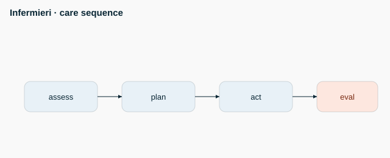

<h1>Nursing - mid - M2 - Assessment</h1>

<ul>
<li>GCS: eyes (1-4), verbal (1-5), motor (1-6); total 3-15</li>
<li>GCS 15 = fully alert</li>
<li>GCS &lt;= 8 = severe (airway risk)</li>
<li>Pain 0-10</li>
<li data-aoi="kritike" data-critical="true">Full head-to-toe assessment</li>
</ul>
